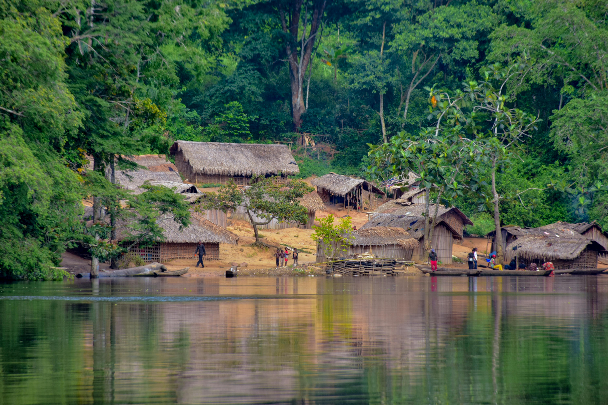

Cuvette-Ouest
15k
Parc d'Odzala-Kokoua
Le royaume des gorilles des plaines de l'Ouest

RetourL'immensité sauvage au fil du majestueux fleuve
La République du Congo (Brazzaville) est une terre de mystères et de nature luxuriante. Deuxième poumon vert de la planète, le pays offre des sanctuaires de biodiversité uniques comme le Parc d'Odzala, où règnent les gorilles des plaines. Entre l'élégance légendaire des Sapeurs de Brazzaville, les falaises rouges de Diosso et les eaux tumultueuses du fleuve Congo, ce pays invite à une aventure authentique hors des sentiers battus.
Découvrez les 15 sites emblématiques du patrimoine congolais
Le royaume des gorilles des plaines de l'Ouest

Le "Grand Canyon" du Congo aux falaises rouges

Merveille architecturale aux toits verts émeraude

La puissance brute du fleuve Congo à Brazzaville

Où la forêt équatoriale rencontre l'Océan Atlantique

Plages infinies et dynamisme de la capitale économique

Sanctuaire de réintroduction des gorilles orphelins

Havre de paix balnéaire et spots de surf

Immersion dans la vie trépidante de Brazza la Verte

Trésors ethnographiques des peuples Téké et Kongo

La forêt vierge "Dernier Éden" de l'Afrique
Évasion paisible entre Brazzaville et Kinshasa

Un lieu de mémoire historique sur la côte atlantique
Poumon économique de l'Afrique Centrale
Spectacle naturel saisissant au sud de Brazzaville
L'élégance de la SAPE et la force du fleuve.
Le Congo-Brazzaville possède une identité culturelle forte, marquée par l'histoire du Royaume Téké et du Royaume de Loango. C'est ici qu'est née la SAPE (Société des Ambianceurs et des Personnes Élégantes), véritable philosophie de vie et art de la mode unique au monde. La musique (Rumba congolaise) et la littérature (Tchicaya U Tam'si, Alain Mabanckou) témoignent de l'immense vitalité créative de ce pays.
Le culte de l'élégance vestimentaire et du savoir-vivre, symbole de la fierté brazzavilloise.
Une autorité traditionnelle respectée (Le Onko) gardienne de l'histoire des plateaux.
Patrimoine immatériel de l'humanité, l'âme sonore des deux rives du fleuve.
Le respect sacré de la forêt, source de vie et de spiritualité pour les peuples autochtones.

Découvrez l'artisanat congolais. Des fibres de raphia aux sculptures Téké, emportez l'âme du Congo.
 Tradition
Tradition
Toffe traditionnelle tissée à la main avec les fibres de palmier raphia, motifs royaux.
 Artisanat
Artisanat
Sculpture protectrice en bois précieux, héritage de la cosmogonie des peuples du fleuve.
 Gemme
Gemme
Parures raffinées en pierre de malachite verte, extraite des gisements d'Afrique Centrale.
Paniers et corbeilles tressés avec une finesse extrême par les artisans de la Lékoumou.
Cannes sculptées et pochettes en tissu haut de gamme pour l'élégance à la brazzavilloise.
Instrument de musique traditionnel envoûtant, fabriqué en bois et lamelles de métal.

Brazzaville, Aéroport

Brazzaville, Centre

Pointe-Noire, Centre

Pointe-Noire, Côte

Brazzaville, Quartier Chic

Brazzaville, CBD
La cuisine congolaise est réputée pour ses sauces onctueuses et ses produits frais de la forêt et du fleuve. Un régal pour les sens.
Le plat national : poulet mijoté dans une sauce onctueuse de noix de palme.
Feuilles de manioc pilées, cuites longuement avec du poisson ou de la viande.
Poisson frais cuit en papillote de feuilles de bananier, une explosion de saveurs.
Spécialité rare et prisée, cuite traditionnellement au feu de bois.
Pain de manioc fermenté et cuit à la vapeur, l'accompagnement roi.
Poisson séché et salé, cuisiné en sauce avec des aubergines ou du chou.
Le complément indispensable, sucré-salé et fondant.
Sauce à base d'oseille sauvage, acide et rafraîchissante.
Haricots mijotés dans une sauce tomate parfumée à l'huile de palme.
Boisson tonifiante et épicée, servie très fraîche.
Le meilleur poisson du fleuve Congo, grillé entier au charbon de bois.
Boule de pâte de manioc, base solide de l'alimentation équatoriale.
Le Congo vibre au son de la musique et de la mode tout au long de l'année.
Festival Panafricain de Musique (Tous les 2 ans à Brazzaville), célébrant les rythmes du continent.
Grand défilé des Sapeurs dans les rues de Bacongo pour célébrer l'élégance (Brazzaville).
Compétition traditionnelle sur le fleuve Congo, héritage des peuples riverains.
La période idéale pour visiter les parcs nationaux (Odzala) et observer les gorilles. Le temps est frais et les pistes sont praticables.
Une belle accalmie entre les deux saisons des pluies, idéale pour profiter de la côte sauvage à Pointe-Noire.
Brazzaville et Pointe-Noire sont des villes paisibles. Respectez l'interdiction de photographier les bâtiments officiels et militaires.
Vaccin fièvre jaune obligatoire. Traitement antipaludéen impératif pour les séjours en forêt. Moustiquaire de rigueur.
Prévoyez des vêtements longs et légers pour les safaris. Suivez scrupuleusement les consignes des rangers lors des rencontres avec les gorilles.
Franc CFA (XAF). Les cartes bancaires sont acceptées dans les grands hôtels. Le cash est nécessaire partout ailleurs.
Ranger & Expert Gorilles
Parfait travaille à Odzala depuis 12 ans. Il a un don pour décoder le comportement des gorilles et vous guider en forêt.
Guide Culturelle Brazzaville
Experte de l'histoire de la SAPE et des marchés de Brazza, Clarisse vous fera vivre l'âme de la ville verte.
Expert Côte & Kouilou
Dieuveille vous fera découvrir les gorges de Diosso et les sites historiques de la côte avec un savoir encyclopédique.